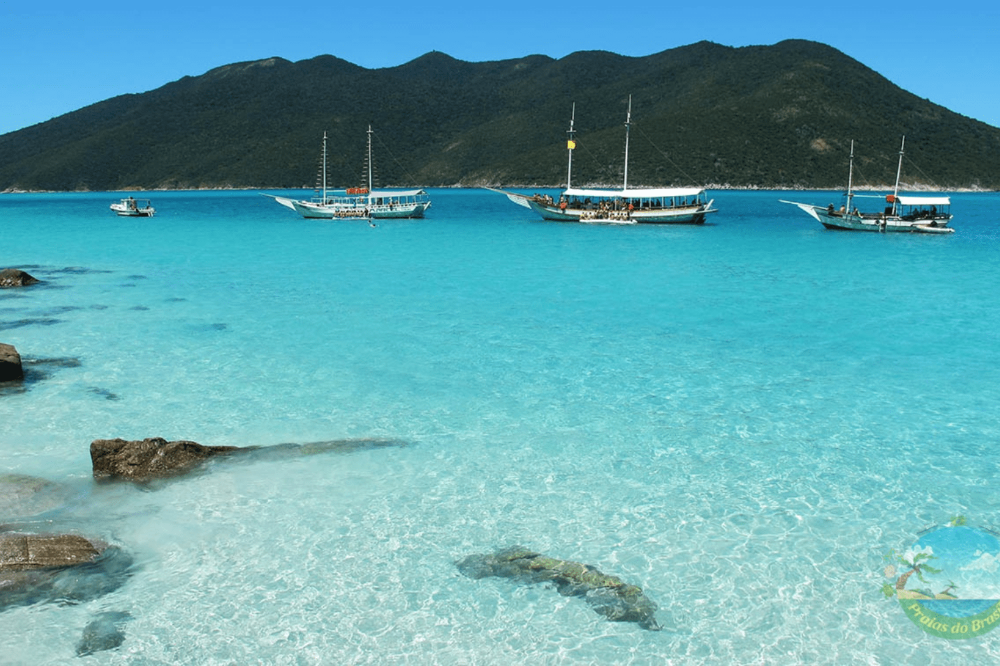
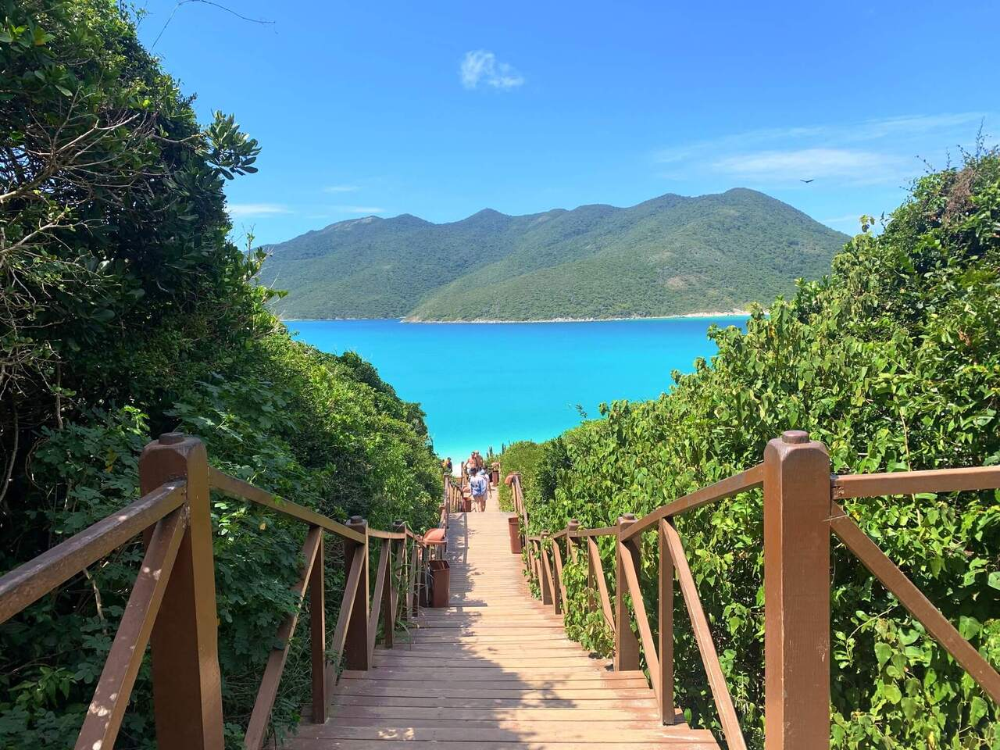
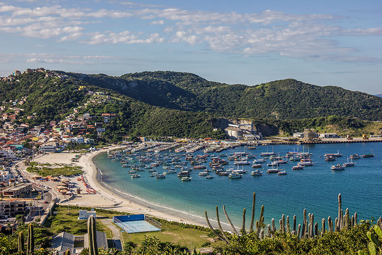

Arraial do Cabo: um paraíso de águas cristalinas
Arraial do Cabo, localizado na Região dos Lagos do Rio de Janeiro, é um destino conhecido por suas águas claras, areia branca e paisagens naturais que lembram o Caribe. A cidade atrai visitantes que buscam praias paradisíacas, passeios de barco, mergulho e contato direto com a natureza, sendo um dos lugares mais marcantes do litoral brasileiro.
Uma experiência inesquecível no litoral
Visitar Arraial do Cabo é viver momentos de descanso, aventura e contemplação. Entre praias famosas como a Praia do Farol, as Prainhas do Pontal do Atalaia e a Praia do Forno, o destino oferece cenários perfeitos para fotos, banhos de mar e passeios em meio a formações rochosas, trilhas e mirantes naturais.
Lista de praias em Arraial do Cabo
Praia do Farol

Prainhas do Pontal do Atalaia

Praia do Forno

Praia dos Anjos

Demais Praias
- Praia Grande
- Prainha
- Praia Brava
- Praia do Pontal
- Praia do Foguete
- Praia da Ilha do Farol